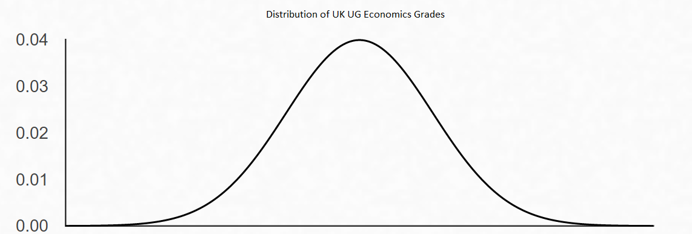
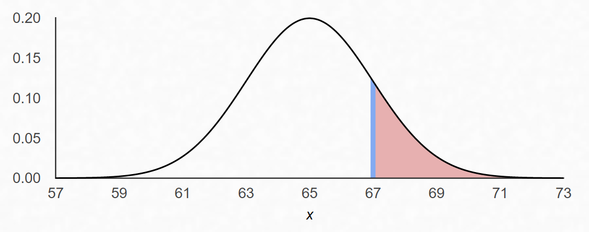

Hypothesis testing compares sample evidence with a null hypothesis using a test statistic, critical value or p-value. This guide supports statistics and econometrics students who need clearer inference methods.
Need help applying hypothesis tests?
Send the test, dataset or exam question and the part that is unclear. The diagnostic can focus on null hypotheses, p-values, confidence intervals or interpretation.
The basic problem: claims and evidence
Suppose two students disagree about the average economics grade in the UK undergraduate population.
The population mean grade \(\mu \leq 65\%\)
The population mean grade \(\mu > 65\%\)
Neither can observe every economics student in the UK. Instead they agree to draw a random sample of 25 students and use that data to evaluate the competing claims. This is the fundamental setup of a hypothesis test.
Null and alternative hypotheses
The first step is to formalise the competing claims as statistical hypotheses about the unknown population parameter \(\mu\).
Null hypothesis \(H_0\): the claim to be tested. By convention, the null typically specifies a specific value or boundary for the parameter. Here: \(H_0: \mu \leq 65\).
Alternative hypothesis \(H_A\): what we conclude if the evidence against the null is strong enough. Here: \(H_A: \mu > 65\).
The null is the default position, the claim we start by assuming is true and ask whether the data gives us sufficient reason to abandon. We do not directly test the alternative; instead, we ask whether the data is sufficiently inconsistent with the null that we should reject it in favour of the alternative.
This asymmetry matters. We cannot "accept" the null, only fail to reject it. Failing to reject \(H_0\) does not prove \(H_0\) is true; it simply means the data is not inconsistent with \(H_0\) at our chosen standard of evidence.
The sampling distribution: the key insight
Suppose we draw a sample of 25 students and compute their sample mean \(\hat{\mu}\). Before we see the data, \(\hat{\mu}\) is a random variable, different random samples would give different values.
Suppose individual grades \(X\) are normally distributed with mean \(\mu\) and variance \(\sigma^2 = 100\) (standard deviation 10). Then by the properties of the normal distribution, the sample mean of 25 independent observations has the distribution:
The sample mean is normally distributed with mean equal to the true population mean \(\mu\), and variance \(\sigma^2/N = 4\) (standard deviation 2). This is the sampling distribution of the mean.

The distribution of individual student grades, assumed normal with mean \(\mu\) and standard deviation \(\sigma = 10\). The sample mean of 25 students has the same mean but standard deviation \(\sigma/\sqrt{N} = 10/5 = 2\), making it much more concentrated around the true mean.This is the key insight that makes hypothesis testing work. Even though we cannot observe \(\mu\) directly, we know the exact distribution of our estimator \(\hat{\mu}\) as a function of \(\mu\). If Student A is right and \(\mu = 65\), then \(\hat{\mu} \sim N(65, 4)\). We can use this to ask: how likely would our observed sample mean be if the null were true?
p-values: what they actually measure
Suppose our sample of 25 students has a mean grade of \(\hat{\mu} = 67\%\). Should we reject Student A's claim?
The question cannot be answered by just looking at whether \(67 > 65\). We need to know how likely a sample mean of 67 or more would be if the null were true.
Under the null (\(\mu = 65\)), \(\hat{\mu} \sim N(65, 4)\). The probability of observing a sample mean at least as large as 67 is:
where \(Z\) is a standard normal random variable. This probability, 15.9%, is the p-value.
The p-value is the probability of observing a test statistic at least as extreme as the one we computed, assuming the null hypothesis is true. A small p-value means the data would be unlikely under \(H_0\), evidence against \(H_0\). A large p-value means the data is consistent with \(H_0\).

The sampling distribution of \(\hat{\mu}\) under the null (\(\mu = 65\)). The shaded area to the right of the observed value 67 is the p-value: the probability, under \(H_0\), of observing a sample mean at least this large. A p-value of 15.9% is not very surprising, we cannot reject \(H_0\) on this basis.Now suppose the sample mean were \(\hat{\mu} = 70\) instead. Then:
A sample mean of 70 would occur with probability only 0.6% if the null were true. This is much stronger evidence against Student A's claim.
Type I error and the significance level
To make a formal decision, reject or fail to reject, we need to set a significance level in advance. This requires understanding the type of error we most want to control.
Rejecting the null hypothesis when it is actually true. This is a false positive: we conclude the data is inconsistent with \(H_0\), but \(H_0\) was correct. The significance level \(\alpha\) is the maximum probability of making a Type I error that we are willing to accept.
Failing to reject the null hypothesis when it is actually false. This is a false negative: we fail to find evidence against \(H_0\), but the alternative was true. The probability of a Type II error depends on the true value of the parameter and the sample size.
The significance level \(\alpha\) is set before looking at the data, typically 5% (\(\alpha = 0.05\)), sometimes 1% or 10%. Setting \(\alpha = 0.05\) means: "I am willing to incorrectly reject the null 5% of the time, across many repetitions of this procedure, when the null is true."
There is a direct trade-off: reducing \(\alpha\) (demanding stronger evidence before rejection) reduces the Type I error rate but increases the Type II error rate. The 5% convention is not sacred, it reflects a historical standard, not a universal truth.
The critical value and rejection region
Given a significance level \(\alpha = 0.05\), we need to find the critical value \(c\) such that the probability of rejecting \(H_0\) when it is true equals exactly 5%.
For our one-tailed test (\(H_A: \mu > 65\)), we want \(c\) such that:
Since \(\hat{\mu} \sim N(65, 4)\) under \(H_0\), we need the 95th percentile of this distribution:
The number 1.645 is the 95th percentile of the standard normal distribution. The test procedure is then:
Fail to reject \(H_0\) if \(\hat{\mu} \leq 68.29\)
Reject \(H_0\) in favour of \(H_A\) if \(\hat{\mu} > 68.29\)
The set of values that lead to rejection (\(\hat{\mu} > 68.29\)) is the rejection region. Our observed sample mean of 67 falls outside the rejection region, so we fail to reject \(H_0\) at the 5% level. A sample mean of 70 would fall inside the rejection region and lead to rejection.
The standardised test statistic
In practice, rather than comparing \(\hat{\mu}\) to a critical value in the original units, we standardise to form a test statistic with a known distribution.
Standardise \(\hat{\mu}\) by subtracting its mean under \(H_0\) and dividing by its standard deviation:
Under \(H_0\) (when \(\mu = 65\)), this z-statistic follows a standard normal distribution: \(z \sim N(0,1)\).
The rejection procedure in terms of the z-statistic is equivalent:
So we reject \(H_0\) if \(z > 1.645\). The value 1.645 is the critical value from the standard normal table for a one-tailed test at the 5% level. This is the standard form of the test as you will encounter it in textbooks and software output.
 The standard normal distribution. The rejection region for a one-tailed test at 5% significance is the upper 5% of the distribution, to the right of 1.645. If the z-statistic exceeds 1.645, we reject \(H_0\).
The standard normal distribution. The rejection region for a one-tailed test at 5% significance is the upper 5% of the distribution, to the right of 1.645. If the z-statistic exceeds 1.645, we reject \(H_0\).
Equivalently: reject when p-value is below \(\alpha\)
The two approaches, comparing the z-statistic to the critical value, or comparing the p-value to \(\alpha\), always give the same conclusion:
This is not a coincidence. When \(z > 1.645\), the area to the right of \(z\) in the standard normal is less than 5%, meaning the p-value is less than 0.05. The two conditions are mathematically identical.
The t-test: when \(\sigma\) is unknown
The z-test assumes we know the population standard deviation \(\sigma\). In practice this is almost never the case. Instead, we estimate \(\sigma\) from the sample using the sample standard deviation \(s = \sqrt{\frac{1}{N-1}\sum_{i=1}^N(X_i - \hat{\mu})^2}\).
Substituting the sample standard deviation for the population value gives the t-statistic:
Under \(H_0\), this statistic follows a t-distribution with \(N-1\) degrees of freedom, written \(t_{N-1}\), rather than the standard normal. The t-distribution has heavier tails than the normal, there is more probability mass in the extremes, which reflects the additional uncertainty from estimating \(\sigma\).
As \(N\) grows large, \(s \to \sigma\) and the t-distribution approaches the standard normal. For \(N \geq 30\) the two are close in practice; for small samples the difference matters. In economics, with large datasets, z and t critical values are often interchangeable. With small samples (30 or fewer observations), use the t-distribution.
The test procedure is the same: compute the t-statistic, find the critical value from the t-distribution at the chosen significance level and degrees of freedom, and reject if the t-statistic exceeds the critical value in absolute value (for a two-tailed test) or in the appropriate tail (for a one-tailed test).
Two-tailed tests
Our example was a one-tailed test because the alternative was directional (\(\mu > 65\)). When the alternative is non-directional, we want to test simply whether the population mean differs from a specified value, we use a two-tailed test.
\(H_0: \mu = \mu_0\) against \(H_A: \mu \neq \mu_0\)
Reject \(H_0\) at level \(\alpha\) if \(|z| > z_{\alpha/2}\), where \(z_{\alpha/2}\) is the \((1-\alpha/2)\) percentile of the standard normal.
At \(\alpha = 0.05\): \(z_{\alpha/2} = z_{0.025} = 1.96\). Reject if \(|z| > 1.96\).
The \(\alpha/2\) split arises because we want a total probability of \(\alpha\) of incorrectly rejecting, and this probability is split equally between the two tails (very large or very small values of the test statistic are both evidence against \(H_0\)).
The two-tailed p-value is twice the one-tailed p-value: \(p\text{-value} = 2\Pr\{Z > |z|\}\).
Most standard regression output in Stata, R, EViews, and Python reports two-tailed p-values for coefficient tests, testing \(H_0: \beta_k = 0\) against \(H_A: \beta_k \neq 0\). If you have a directional hypothesis (e.g., you expect a positive coefficient), the relevant p-value is half the reported one.
What p-values do not mean: common mistakes
The p-value is one of the most widely misunderstood quantities in statistics. Here are the most common errors.
Mistake 1: "The p-value is the probability the null hypothesis is true." False. The p-value is \(\Pr(\text{data this extreme} \mid H_0 \text{ true})\), not \(\Pr(H_0 \text{ true} \mid \text{data})\). These are completely different quantities. Computing the latter requires Bayesian methods and a prior on \(H_0\).
Mistake 2: "A p-value of 0.04 means there is only a 4% chance we are wrong." False. It means that if \(H_0\) were true, there would be a 4% chance of observing data this extreme. Whether \(H_0\) is actually true given the data is a separate question.
Mistake 3: "p > 0.05 means the null is true." False. Failing to reject \(H_0\) at the 5% level only means the data is not inconsistent with \(H_0\) at that standard of evidence. The null could still be false, perhaps the sample size was too small to detect a real effect.
Mistake 4: "p < 0.05 means the result is practically important." False. Statistical significance is not economic significance. With a large enough sample, even a tiny and economically irrelevant difference from \(H_0\) will be statistically significant. Always look at the magnitude of the estimated effect, not just whether it is statistically significant.
Hypothesis tests in econometrics
The framework above applies wherever you test a claim about a parameter. In econometrics, the most common tests you will encounter follow exactly this logic.
OLS coefficient test: testing \(H_0: \beta_k = 0\) (the variable \(k\) has no effect) uses the t-statistic \(t = \hat{\beta}_k / \text{SE}(\hat{\beta}_k)\), compared to the t-distribution with \(N-K\) degrees of freedom.
F-test: testing joint restrictions on several coefficients simultaneously (e.g., \(H_0: \beta_1 = \beta_2 = 0\)) uses the F-statistic, compared to the F-distribution.
Ljung-Box Q-test: testing \(H_0: \rho(1) = \rho(2) = \cdots = \rho(k) = 0\) (residuals are white noise, no serial correlation up to lag k). The Q-statistic under \(H_0\) follows a chi-squared distribution with \(k\) degrees of freedom. Rejecting means the residuals exhibit serial correlation, evidence of model misspecification.
ADF unit root test: testing \(H_0:\) the series has a unit root (is non-stationary) against \(H_A:\) the series is stationary. Uses the Dickey-Fuller statistic, compared to special critical values (not the standard normal, due to the non-standard asymptotic distribution under \(H_0\)).
In each case the logic is the same: specify \(H_0\), derive the distribution of the test statistic under \(H_0\), compute the statistic from data, compare to the critical value or report the p-value.
The lecture slides and worked examples accompanying this material are available as a PDF download: Hypothesis Testing Slides (University of St Andrews) →
Statistics and econometrics tuition
Sessions on hypothesis testing, OLS inference, and econometric diagnostics are available at A Level, undergraduate, and postgraduate level. Book the free initial consultation →
Free videos: the @economaths channel has worked videos on p-values, t-tests and F-tests for linear restrictions.